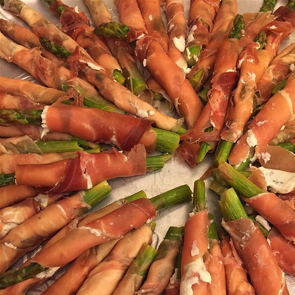

Bacon Wrapped Asparagus

Description
If I have to eat green I will eat it with bacon.
Steps
- Preheat oven to 425 degrees F.
- Combine lemon juice, olive oil and garlic in large bowl.
- Add asparagus; toss to coat. Place asparagus in baking pan.
- Bake 8 minutes, or until crisp-tender. Let cool to room temperature (about 15 minutes).
- Cut each prosciutto slice in half lengthwise.
- Wrap each slice in a spiral around each asparagus spear.
- Serve immediately, or cover and refrigerate until ready to serve.
Recipe taken from https://www.allrecipes.com/recipe/235124/wrapped-asparagus/